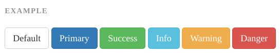
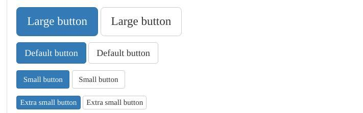
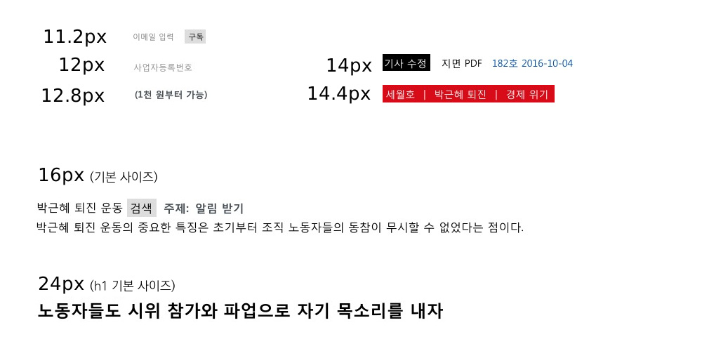
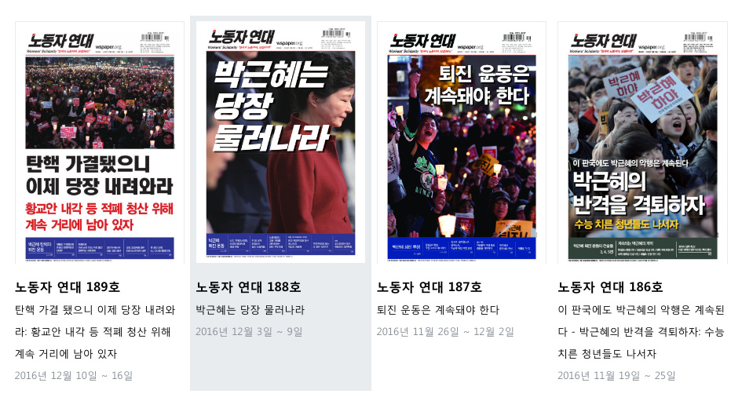
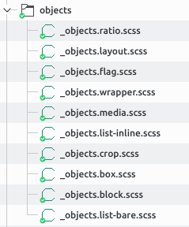
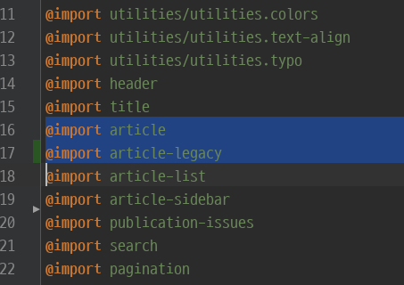

위트인웹
유지보수하기 쉬운
CSS 전략
안형우 노동자 연대
Best Practice?
- 계층적 선택자 활용
- 콘텐츠의 성격을 반영하는 클래스명(시맨틱)
→ 실제 개발에서는 문제를 낳음
계층적 선택자
.issue { ... }
.issue h2 { ... }
#intro h1 { ... }
#intro .main { ... }
#intro .main h1 { ... }권장사항이 우리 목을 조르고 있다
Our CSS best practice are killing us. by Nicole Sullivan
.issue h2 { ... }
.issue ul { ... }
.issue ul li a { ... }
.issue a.more { ... }
.news h2 { ... }
.latest h2 { ... }새 클래스마다 자식 정의, 중복, 귀차니즘, 시간
저격형 선택자
.issue h2 { ... }
.issue ul { ... }
.issue ul li a { ... }
.issue ul a.more { ... }
.news h2 { ... }
.news ul { ... }
.news ul li a { ... }
.news ul a.more { ... }
.latest h2 { ... }
.latest ul { ... }
.latest ul li a { ... }
.latest ul a.more { ... }
.related h2 { ... }
.related ul { ... }
.related ul li a { ... }
.related ul a.more { ... }
#sidebar .issue h2 { ... }
#sidebar .news h2 { ... }
#sidebar .issue ul { ... }
#sidebar .latest h2 { ... }
#sidebar .related h2 { ... }
#article-footer .issue h2 { ... }
#article-footer .news h2 { ... }
#article-footer .issue ul { ... }
#article-footer .issue ul li a { ... }
#article-footer .issue ul a.more { ... }
#article-footer .latest h2 { ... }
#article-footer .related h2 { ... }특정도 전쟁, 용량 증가, 불필요한 코드 삭제↓
C 는 잘못이 없다
케스케이드는 주어진 속성과 요소에 선언된 값 목록을 순서없이 취해서, 아래 규칙*대로 그 선언을 우선순위에 따라 정렬하고, 하나의 케스케이드된 값을 출력한다.
- CSS3 스펙
폭포 처럼 흐르게 하자
@import 'nomalize.css';
html {
font-size: 100%;
font-family: 'Apple SD Gothic Neo', 'Malgun Gothic', 'KopubDotum', sans-serif;
...
}
필요한 놈만 저격하자
/* 기본 스타일 조정 */
input, textarea {
font-family: inherit;
line-height: inherit;
color: inherit;
}
...
/* 특수한 ul만 조정 */
.simple-list {
list-style-type: none;
margin-left: 1em;
}
.simple-list > li:before {
content: "•";
color: #800000;
margin-left: -1em;
}CSS 스펙 권장사항
시맨틱
… 작성자는 콘텐츠의 성격(nature)을 설명하는 값을 사용하는 편이 좋다. 콘텐츠 모양이 어떻게 표시되길 바라는가를 설명하는 값을 사용하는 것은 좋지 않다.
CSS의 시맨틱 ≠ 내용의 시맨틱
그렇게 해야 할 본질적 이유는 없다. 사실, 그렇게 하면 대규모 웹사이트나 애플리케이션 작업을 할 때 방해되는 경우가 많다.
- 내용 시맨틱
- 검색엔진, 사람이 참조
→ HTML, Microdata - 개발 시맨틱
- 개발자가 참조
→ CSS 클래스명
내용 시맨틱
CSS는 구조(또는 내용)와 표현을 분리
the separation of structure (or: content) from presentation.
- HTML & CSS
<h2>박근혜 정권 퇴진 제10차 범국민행동의 날</h2>
<h1>1백만 명이 소리친 광화문 “송박영신”</h1><h1>
<span class="subheadline">
박근혜 정권 퇴진 제10차 범국민행동의 날
</span>
1백만 명이 소리친 광화문 “송박영신”
</h1><header class="article-title">
<p>박근혜 정권 퇴진 제10차 범국민행동의 날</p>
<h1>1백만 명이 소리친 광화문 “송박영신”</h1>
</header><a href="#" title="카카오톡 공유">
<img src="..." alt="">
</a><button type="button"
class="button-like-text"
title="카카오톡 공유">
<img src="..." alt="">
</button>address 태그
<address>
서울시 구로구 디지털로 ...
</address>올바로 사용한 것일까요?
address 태그
HTML
Address요소 (<address>) 는 작성자가 가까운<article>또는<body>에 대한 연락처 정보를 제공하기 위해 사용합니다; 후자의 경우에는 문서 전체에 적용됩니다.
address 태그
- 연락처와 관련없는 임의의 주소 X
- 작성일 X →
<time>사용- 보통
<footer>안에 위치
페이스북 인스턴트 아티클 예제
...
<!-- 글의 저자 -->
<address>
인스턴트 아티클 팀
</address>
...
HTML5 스펙의 예제
개발 시맨틱
<h2>뉴스</h2>
<ul class="news">
...<h2>뉴스</h2>
<ul class="simple-list">
...OOCSS
by 니콜 설리반, 2009
- 골격과 겉모양을 분리 Separate Structure and Skin
- 컨테이너와 내용물을 분리 Separate Container and Content
font-size 369
./view_text.css: font-size: 14px;
./view_text.css: font-size: 13px;
./view_text.css: font-size: 20px;
./view_text.css: font-size:12px;
./popup-notice.css: font-size: 13px;
./popup-notice.css: font-size: 15px;
./popup-notice.css: font-size: 13px;
./exceptions.css: font-size: 16px;
./exceptions.css: font-size: 1em;
./exceptions.css: font-size: 18px;
./exceptions.css: font-size: 12px;
./oldies_cover.css: font-size: 0.9em;
./oldies_cover.css: font-size: 0.8em;
./oldies_cover.css: font-size: 0.8em;
./oldies_cover.css: font-size: 0.8em;
./oldies_cover.css: font-size: 0.8em;
./oldies_cover.css: font-size: 0.9em;
./oldies_cover.css: font-size: 20px;
./oldies_cover.css: font-size: 1.2em;
./subscribe.css: font-size: 14px;
./subscribe.css: font-size: 1.8em;
./subscribe.css: font-size: 12px;
./subscribe.css: font-size: 0.8em;
./subscribe.css: font-size: 14px;
./subscribe.css: font-size: 1em;
./subscribe.css: font-size: 12px;
./subscribe.css: font-size: 1em;
./subscribe.css: font-size: 13px;
./subscribe.css: font-size: 18px;
./subscribe.css: font-size: 18px;
./subscribe.css: font-size: 15px;
./column.css: font-size: 13px;
./column.css: font-size: 13px;
./column.css: font-size: 14px;
./column.css: font-size: 12px;
./column.css: font-size:12px;
./column.css: font-size:12px;
./column.css: font-size: 12px;
./column.css: font-size: 12px;
./column.css: font-size: 12px;
./column.css: font-size: 12px;
./column.css: font-size: 12px;
./subject-list.css: font-size: 12pt;
./news_all_online.css: font-size:12px;
./news_all_online.css: font-size: 12px;
./news_all_online.css: font-size: 11px;
./oldies_list.css: font-size: 1.1em;
./oldies_list.css: font-size: 0.8em;
./oldies_list.css: font-size: 1.2em;
./oldies_list.css: font-size:17px;
./oldies_list.css: font-size: 0.8em;
./oldies_list.css: font-size: 0.9em;
./oldies_list.css: font-size:12px;
./oldies_list.css: font-size: 11px;
./oldies_list.css: font-size: 12px;
./oldies_list.css: font-size: 1.2em;
./css3Button.css: font-size: 12px;
./css3Button.css: font-size: 11px;
./outlet-info.css: font-size: 13px;
./view-for-fckeditor.css: font-size: 25px;
./view-for-fckeditor.css: font-size: 18px;
./view-for-fckeditor.css: font-size: 15px;
./view-for-fckeditor.css: font-size: 12px;
./view-for-fckeditor.css: font-size: 12px;
./view-for-fckeditor.css: font-size: 12px;
./view-for-fckeditor.css: font-size:13px;
./view-for-fckeditor.css: font-size: 14px;
./view-for-fckeditor.css: font-size: 14px;
./view-for-fckeditor.css: font-size: 12px;
./view-for-fckeditor.css: font-size:12px;
./view-for-fckeditor.css: font-size: 12px;
./view-for-fckeditor.css: font-size: 12px;
./view-for-fckeditor.css: font-size: 18px;
./view-for-fckeditor.css: font-size: 15px;
./view-for-fckeditor.css: font-size: 13px;
./view-for-fckeditor.css: font-size: 13px;
./view-for-fckeditor.css: font-size: 12px;
./view-for-fckeditor.css: font-size: 12px;
./view-for-fckeditor.css: font-size: 12px;
./view-for-fckeditor.css: font-size: 12px;
./view-for-fckeditor.css: font-size: 12px;
./view-for-fckeditor.css: font-size: 12px;
./view-for-fckeditor.css: font-size:12px;
./view-for-fckeditor.css: font-size: 12px;
./view-for-fckeditor.css: font-size: 12px;
./view-for-fckeditor.css: font-size: 12px;
./view-for-fckeditor.css: font-size: 12px;
./view-for-fckeditor.css: font-size: 13px;
./view-for-fckeditor.css: font-size: 0.8em;
./view-for-fckeditor.css: font-size: 16px;
./view-for-fckeditor.css: font-size: 14px;
./view-for-fckeditor.css: font-size: 14px;
./support.css: font-size: 13px;
./support.css: font-size: 14px;
./support.css: font-size: 1em;
./support.css: font-size: 12px;
./support.css: font-size: 13px;
./support.css: font-size: 14px;
./support.css: font-size: 18px;
./support.css: font-size: 15px;
./support.css: font-size: 30px;
./support.css: font-size: 18px;
./support.css: font-size: 0.9em;
./support.css: font-size: 18px;
./special_page.css: font-size: 20px;
./special_page.css: font-size: 16px;
./special_page.css: font-size: 15px;
./special_page.css: font-size: 12px;
./special_page.css: font-size: 12px;
./special_page.css: font-size: 14px;
./special_page.css: font-size: 13px;
./special_page.css: font-size:11px;
./special_page.css: font-size: 12px;
./sass/index.sass: font-size: $sub-headline-size * 1.2
./sass/index.sass: font-size: 18px
./sass/index.sass: font-size: 0.7em
./sass/index.sass: font-size: 30px
./sass/index.sass: font-size: 20px
./sass/index.sass: font-size: 40px
./sass/index.sass: font-size: 30px
./sass/index.sass: font-size: 24px
./sass/index.sass: font-size: 16px
./sass/index.sass: font-size: 18px
./sass/index.sass: font-size: 14px
./sass/index.sass: font-size: 14px
./sass/index.sass: font-size: $sub-headline-size
./sass/index.sass: font-size: .8em
./sass/index.sass: font-size: 14px
./sass/index.sass: font-size: 18px
./sass/index.sass: font-size: 24px
./sass/index.sass: font-size: 30px
./sass/index.sass: font-size: 40px
./sass/index.sass: font-size: 12px
./sass/index.sass: font-size: 11px
./sass/index.sass: font-size: 0.75em
./sass/index.sass: font-size: 12px
./sass/index.sass: font-size: 13px
./sass/index.sass: font-size: 12px
./sass/index.sass: font-size: 14px
./sass/index.sass: font-size: 13px
./sass/index.sass: font-size: 13px
./sass/index.sass: font-size: 14px
./sass/index.sass: font-size: 13px
./sass/index.sass: font-size: inherit
./sass/index.sass: font-size: 0.9em
./sass/index.sass: font-size: 13px
./sass/index.sass: font-size: 18px
./sass/index.sass: font-size: 0.8em
./sass/index.sass: font-size: .9em
./sass/index.sass: font-size: 14px
./sass/ie7.sass: font-size: 14px
./sass/ie7.sass: font-size: 14px
./sass/common.sass: font-size: 12px
./sass/common.sass: font-size: 12px
./sass/common.sass: font-size: 13px
./sass/common.sass: font-size: 12px
./sass/common.sass: font-size: 12px
./sass/common.sass: font-size: 12px
./sass/common.sass: font-size: 12px
./sass/common.sass: font-size: 11px
./sass/common.sass: font-size: 17px
./sass/common.sass: font-size: 13px
./sass/common.sass: font-size: 12px
./sass/common.sass: font-size: 12px
./sass/common.sass: font-size: 25px
./sass/common.sass: font-size: 13px
./sass/common.sass: font-size: 13px
./sass/common.sass: font-size: 13px
./sass/common.sass: font-size: 11px
./sass/common.sass: font-size: 9px
./sass/common.sass: font-size: 14px
./sass/common.sass: font-size: 13px
./sass/common.sass: font-size: 12px
./sass/common.sass: font-size: 13px
./sass/common.sass: font-size: 12px
./sass/common.sass: font-size: 12px
./sass/common.sass: font-size: 12px
./sass/common.sass: font-size: 12px
./sass/common.sass: font-size: 12px
./sass/common.sass: font-size: 12px
./sass/common.sass: font-size: 11px
./sass/common.sass: font-size: 12px
./sass/common.sass: font-size: 12px
./sass/common.sass: font-size: 12px
./sass/common.sass: font-size: 12px
./sass/common.sass: font-size: 12px
./sass/common.sass: font-size: 12px
./sass/common.sass: font-size: 12px
./sass/common.sass: font-size: 13px
./sass/common.sass: font-size: 12px
./sass/common.sass: font-size: 14px
./sass/common.sass: font-size: 14px
./sass/common.sass: font-size: 20px
./sass/common.sass: font-size: 14px
./sass/common.sass: font-size: 14px
./sass/common.sass: font-size: 18px
./sass/common.sass: font-size: 12px
./sass/common.sass: font-size: 0.8em
./sass/common.sass: font-size: 14px
./sass/common.sass: font-size: 0.8em
./sass/common.sass: font-size: 0.7em
./sass/common.sass: font-size: 0.8em
./sass/common.sass: font-size: 0.9em
./sass/common.sass: font-size: 12px
./sass/common.sass: font-size: 12px
./sass/common.sass: font-size: 16px
./sass/common.sass: font-size: 16px
./sass/common.sass: font-size: 13px
./sass/common.sass: font-size: 12px
./sass/common.sass: font-size: 13px
./sass/common.sass: font-size: 12px
./sass/common.sass: font-size: 12px
./sass/common.sass: font-size: 13px
./sass/common.sass: font-size: 13px
./sass/common.sass: font-size: 16px
./sass/common.sass: font-size: 13px
./sass/common.sass: font-size: 14px
./sass/common.sass: font-size: 12px
./sass/common.sass: font-size: 14px
./sass/common.sass: font-size: 16px
./sass/common.sass: font-size: 14px
./sass/common.sass: font-size: 0.8em
./sass/common.sass: font-size: 15px
./sass/common.sass: font-size: 12px
./sass/common.sass: font-size: 1.1em
./search.css: font-size: 0.8em;
./search.css: font-size: 18px;
./search.css: font-size: 0.9em;
./search.css: font-size: 0.8em;
./search.css: font-size: 12px;
./search.css: font-size: 1.2em;
./search.css: font-size: 13px;
./search.css: font-size:15px;
./epub.css: font-size: 2em;
./epub.css: font-size: 0.85em;
./epub.css: font-size: .9em;
./epub.css: font-size: .9em;
./epub.css: font-size: 0.9em;
./epub.css: font-size: 1em;
./list_page.css: font-size: 1.5em;
./list_page.css: font-size: 1em;
./list_page.css: font-size: 13px;
./list_page.css: font-size:12px;
./news_subject.css: font-size: 12px;
./news_subject.css: font-size: 12px;
./news_subject.css: font-size: 1.5em;
./left21cse.css: font-size: 13px;
./left21cse.css: font-size: 13px;
./left21cse.css: font-size: 18px;
./left21cse.css: font-size: 1em;
./left21cse.css: font-size: 16px;
./left21cse.css: font-size: 0.9em;
./common_form.css: font-size: 18px;
./common_form.css: font-size: 18px;
./common_form.css: font-size: 18px;
./common_form.css: font-size: 18px;
./common_form.css: font-size: 18px;
./common_form.css: font-size: 18px;
./common_form.css: font-size: 1.3em;
./common_form.css: font-size: 14px;
./common_form.css: font-size: 18px;
./common_form.css: font-size: 18px;
./common_form.css: font-size: 18px;
./common_form.css: font-size: 18px;
./serial.css: font-size: 16px;
./serial.css: font-size: 16px;
./serial.css: font-size: 14px;
./serial.css: font-size: 12px;
./serial.css: font-size:12px;
./serial.css: font-size:12px;
./serial.css: font-size: 12px;
./serial.css: font-size: 12px;
./serial.css: font-size: 12px;
./serial.css: font-size: 0.8em;
./serial.css: font-size: 13px;
./serial.css: font-size: 12px;
./serial.css: font-size: 12px;
./serial.css: font-size: 12px;
./serial.css: font-size: 12px;
./feature_issue.css: font-size: 45px;
./feature_issue.css: font-size: 13px;
./feature_issue.css: font-size: 18px;
./feature_issue.css: font-size: 0.9em;
./article-support.css: font-size: 18px;
./article-support.css: font-size: 1.2em;
./issue.css: font-size: 14px;
./issue.css: font-size:12px;
./issue.css: font-size: 12px;
./issue.css: font-size: 12px;
./issue.css: font-size: 12px;
./issue.css: font-size: 13px;
./issue.css: font-size: 13px;
./issue.css: font-size:12px;
./issue.css:.new-issue p {font-size: 14px; line-height: 1.8; }
./issue.css: font-size: 14px;
./issue.css: font-size: 1.1em !important;
./cse.css: font-size: 60px;
./cse.css: font-size: 18px;
./cse.css: font-size: 18px;
./view.css: font-size: 0.7em;
./view.css: font-size: 0.9em;
./view.css: font-size: 25px;
./view.css: font-size: 18px;
./view.css: font-size: 1.3em;
./view.css: font-size: 1.1em;
./view.css: font-size: 14px;
./view.css: font-size: 12px;
./view.css: font-size: 16px;
./view.css: transition: font-size 0.2s;
./view.css: font-size: 12px;
./view.css: font-size: 0.9em;
./view.css: font-size: 0.9em;
./view.css: font-size: 12px;
./view.css: font-size: 1.3em;
./view.css: font-size: 1.3em;
./view.css: font-size: 0.95em;
./view.css: font-size: 13px;
./view.css: font-size: 14px;
./view.css: font-size: 12px;
./view.css: font-size: 12px;
./view.css: font-size: 12px;
./view.css: font-size: 0.9em;
./view.css: font-size: 1em;
./view.css: font-size: 14px;
./view.css: font-size: 12px;
./view.css: font-size: 12px;
./view.css: font-size: 12px;
./view.css: font-size: 12px;
./view.css: font-size: 0.7em;
./view.css: font-size: 0.9em;
./view.css: font-size: 13px;
./view.css: font-size: 0.8em;
./view.css: font-size: 1em;
./view.css: font-size: 12px;
./view.css: font-size: 0.8em;
./view.css: font-size: 16px;
./view.css: font-size: 14px;
./view.css: font-size: 14px;
./view.css: font-size: 1em;
./view.css: font-size: 0.9em;
./view.css: font-size: 14px;
./view.css: font-size: 12px;
./view.css: font-size: 1em;
./view.css: font-size: 1em;
./view.css: font-size: 1em;
./view.css: font-size: 0.8em;
./view.css: font-size: 0.85em;
./view.css: font-size: 1em;
./view.css: font-size: .8em;
./view.css: font-size: 18px;
./view.css: font-size: .7em;
./view.css: font-size: 20px;
./view.css: font-size: 15px;
./view.css: font-size: 12px;
./view.css: font-size: 17px !important;
./view.css: font-size: inherit !important;
./view.css: font-size: 0.9em;
./view.css: font-size: 1.3em;
./view.css: font-size: 12px;
./print.css: font-size: 11pt;
./print.css: font-size: 1.5em;
./print.css: font-size: 1.3em;
./print.css: font-size: 0.85em;
./print.css: font-size: 12px;
./print.css: font-size: 1.2em;
./print.css: font-size: 9pt;
./print.css: font-size: 10pt;
./print.css: font-size: 13pt;
./print.css: font-size: 15pt;알렉사 탑 1,000 사이트 899(2011)
원칙1. 골격과 겉모양을 분리
.primary-button {
line-height: 20px;
background-color: blue;
...
}.danger-button {
line-height: 20px;
background-color: red;
...
}원칙1. 골격과 겉모양을 분리
.button { line-height: 20px; ... }
.button-primary {
background-color: blue;
}
.button-danger {
background-color: red;
}
종류 많을수록 유리
원칙2. 컨테이너와 내용물을 분리
#article h2 { font-size: 24px; }
#article h3 { font-size: 20px; }
#sidebar h2 { font-size: 20px; }
#sidebar h3 { font-size: 16px; }
#footer h2 { font-size: 16px; }
#footer h3 { font-size: 14px; }한 눈에 보여 주려고 한 줄로 쓴 것뿐, 줄을 바꿔서 한 줄에 속성 하나만 쓰세요.
원칙2. 컨테이너와 내용물을 분리
.u-h2 { font-size: 24px; }
.u-h3 { font-size: 20px; }
.u-h4 { font-size: 16px; }
.u-h5 { font-size: 14px; }
.media 객체
<div class="media attribution">
<a class="img" href="...">
<img src="..." alt="...">
</a>
<div class="bd">...</div>
</div>.media 객체
.media {
margin: 10px;
}
.media, .bd {
overflow: hidden;
}
.media .img {
float: left;
margin-right: 10px;
}
.media .img img {
display: block;
}
.media .imgExt {
float: right;
margin-left: 10px;
}페이스북 CSS 용량
gzip 이후 19% 감소
부트스트랩의 .btn 객체

<button class="btn btn-primary">부트스트랩의 .btn 객체

<button class="btn btn-lg btn-primary">OOCSS의 도구
- 특정도(Specificity) 평준화
- 태그 선택자 사용 자제
- 재사용성을 확보하는 이름
- 기본 객체를 갖추자
- 타이포그라피 전략을 세우자
등
도구1. 특정도 평준화
| id | class | tag | |
|---|---|---|---|
#sidebar h2 |
1 | 0 | 1 |
.box.bordered |
0 | 2 | 0 |
.u-h2 |
0 | 1 | 0 |
.bordered |
0 | 1 | 0 |
더 높은 특정도 → 특정도 전쟁 → 악순환
→ 일일이 찾아야, no ID in CSS
자세하게 알고 싶으면 MDN의 명시도 참고
도구2. 클래스와 태그 선택자를 결합하지 말자
ul.nav
div.box
도구2. 넓은 범위에 자손 태그 선택자를 사용하지 말자
.title span
박근혜는
즉각
퇴진하라
도구2. 넓은 범위에 자손 태그 선택자를 사용하지 말자
.color-primary
박근혜는
즉각
퇴진하라
도구1~2. 특정도와 태그 선택자
.btn { ... }
.uilist a { ... }<nav class="uilist">
<a>소개</a>
<a class="btn">로그인</a>
</nav>href 속성은 생략했습니다.
도구1~2. 특정도와 태그 선택자
.btn { ... }
.uilist-item { ... }<nav class="uilist">
<a class="uilist-item">소개</a>
<span class="uilist-item">
<a class="btn">로그인</a>
</span>
</nav>도구3. 재사용성을 확보하는 이름
.blue-title
.text-primary
도구3. 재사용성을 확보하는 이름
.bottom-item
.image-box
도구4. 기본 객체를 갖추자
그리드, 헤딩, 링크, 목록, 버튼,
미디어, 테이블, 타이포...
도구5. 타이포그라피 전략을 세우자
- 기본 글꼴, 크기, 색을 태그 선택자에 지정
- Hx 글꼴, 크기, 색을 헤딩 선택자에 지정
- 사용할 글꼴, 크기, 색 유틸리티 클래스
객체에서의 폰트 지정은 최소화
도구5. 타이포그라피 전략을 세우자
도구5. 타이포그라피 전략을 세우자
유틸리티 클래스 활용
/* text align */
.u-text-right
.u-text-center
/* font size */
.u-text-tiny
.u-text-small
.u-text-large
/* font color */
.u-color-primary
.u-color-secondary
.u-color-muted
.u-color-highlight
/* remove underline */
.u-text-no-deco
/* button like text */
.u-button-like-text
사례
.separator {
border: none;
border-bottom-width: 1px;
}
.separator--default { ... }
.separator--secondary { ... } <hr class="separator
separator--default">내용 시맨틱
<div class="separator
separator--default"></div>HTML
<hr>요소는 문단 수준 요소들 사이의 주제 구분을 나타냅니다(예를 들면, 이야기에서 장면 변경 또는 섹션 주제의 전환).- MDN
height 정의 없이 균일 높이
제목 부분 처리
이슈 :
노동자 운동
.flex-grid + .title + utilities
<div class="flex-grid">
<a class="flex-grid__item u-3/12">
<img/>
<header class="title title--one-line">
<p class="u-h3 u-color-sub">...</p>
<h1 class="u-h3">...</h1>
</header>
</a>
</div>
...배경색 담당 div를 뺐기 때문에 작동하는 코드는 아닙니다.
재사용
객체의 범위는
어떻게 정해야 할까?
- 제한된 역할을 담당하는 → 얼마나 제한된?
- 관련된 코드들을 → 얼마나 관련된?
- 재사용을 염두에 두고 → 과연 재사용될까?
- 추상화해 묶는다 → 얼마나 추상화할지?
사람이 판단
목적은 생산성
빠른 퇴근
∴ 예외 있다
예외
에디터가 생산한 코드
.content h2
예외
선택자에 개입하지
못하는 라이브러리
또 다른 무기
BEM
Block, Element, Modifier
작명규칙
.block {}
.block__element {}
.block--modifier {}오리지날 BEM(bem.info)과는 차이가 있다.
작명규칙
.site-search {} /* Block */
.site-search__field {} /* Element */
.site-search--full {} /* Modifier */연관된 클래스 묶음을 찾아 보자

Welcome to Foo Corp
Foo Corp is the best, seriously!
연관된 클래스 묶음을 찾아 보자
Welcome to Foo Corp
Foo Corp is the best, seriously!
못생겼다
그래서?
오용1. 초 일관된 BEM
.header {}
.header__logo { ... }헤더, 푸터, 콘텐츠 영역, 로고...
오용2. Sniping Type에서 Snake Type으로...
CSS에 문서 구조를 담지 말자
#article-footer .issue ul li a↓
.article-footer__issue__ul__li__a오용3
.mt10 .mt20 .mt30 .mt40 .mt50 .mt60 .mr10 .mr20 .mr30 .mr40 .mr50 .mr60 .f10 .f11 .f12 .f13 .f14 .f15 .f16 .f17 .f18 .f19 .f20 .ffnanum
추상화 ≠ 원자화
더 배우기
- Sass, Less 같은 전처리기
- CSS 프레임워크
전처리기 의 이점
 연관성, 중복↓, 불필요한 코드 제거,
재사용성↑, minify, 변수 → 일관성, 함수, 확장(extend)
나가며
시맨틱? 스펙을 보자
원칙에 기반해
사람과 토론한다
예외
... 정말?
감사합니다
http://mytory.netmail@mytory.net